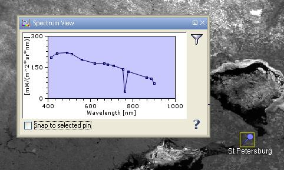

| The Spectrum View | |
If you have opened a data product which contains spectral bands, you can use the spectrum view
to inspect the spectrum for a given pixel position.
A click on the
 icon in the main toolbar or selecting "Spectrum"
from the View --> Tool Windows menu opens a view which will look similar to this one:
icon in the main toolbar or selecting "Spectrum"
from the View --> Tool Windows menu opens a view which will look similar to this one:

If you now move the mouse cursor over an image view, the spectrum will immediately display the spectrum for the current pixel position. Note that the spectrum view can only display the intensities of spectral bands. The spectrum view will remain empty for products without any spectral bands.
You can click & drag the mouse in the diagram in order to display the value of the selected spectrum graph at the current cursor position (see screenshot above).
While you move the mouse cursor around a region in the image, you will notice that the diagram axes are automatically adjusted according to the min/max values of the displayed spectral band values.
Tip: If you press the SHIFT key while moving the mouse cursor, VISAT adjusts the axes to the local
values at the current pixel position, if you release the SHIFT key again, then the min/max are accumulated
again.
In the following the tool buttons of the spectrum view are explained.
| The filter allows you to select/deselect the bands considered in the diagram. | |
| Toggles the visibility of the cursor spectrum. | |
| Toggles the visibility of the spectra of the selected pins. | |
| Toggles the visibility of all pin spectra. | |
| Switches the grid lines of the diagram on and off. | |
Exports the spectra to a .csv file. |
|
| Displays this help page. |